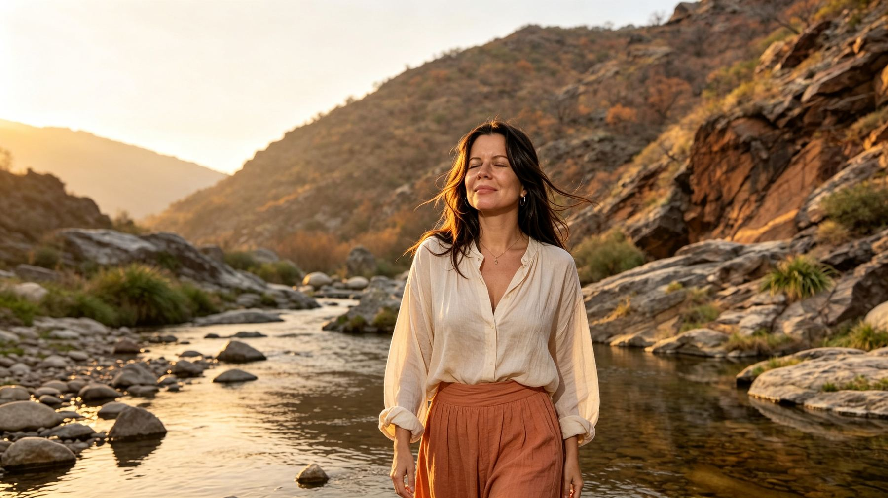
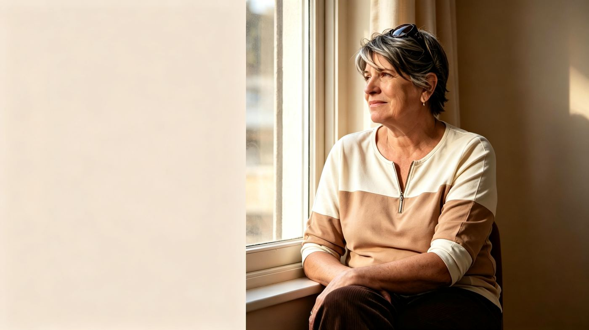
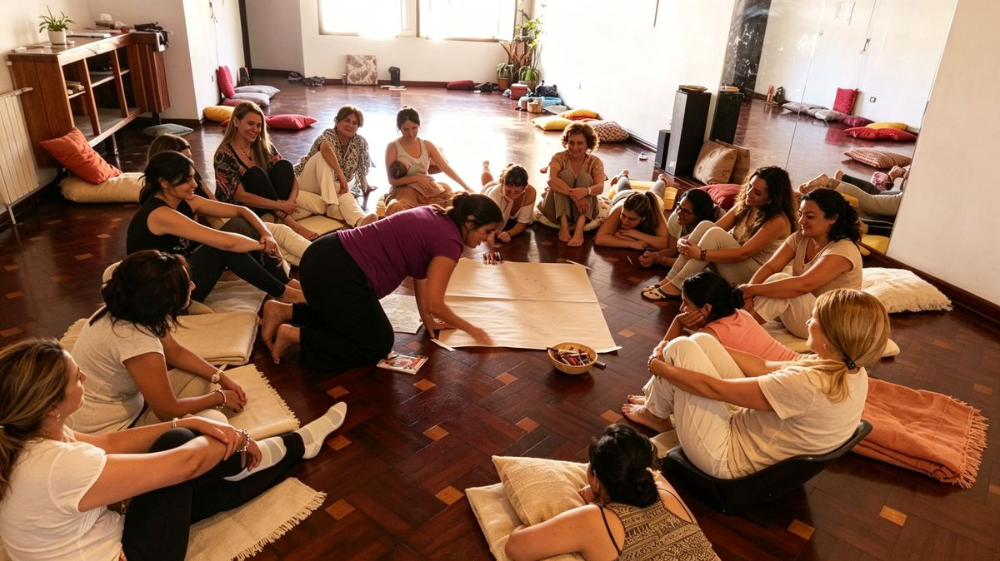
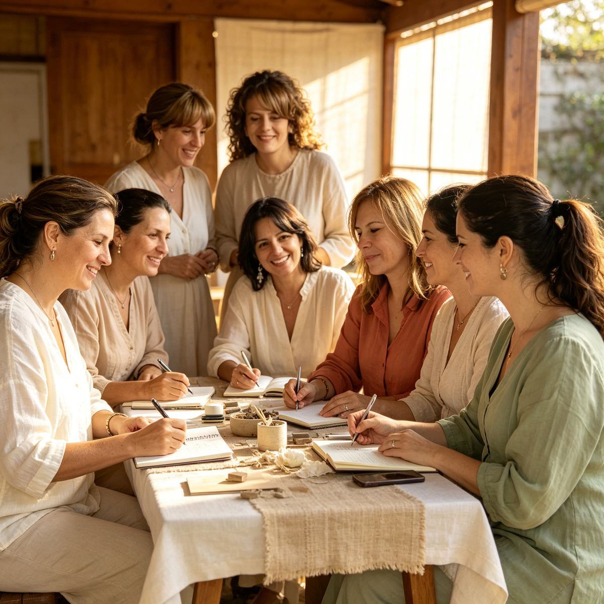
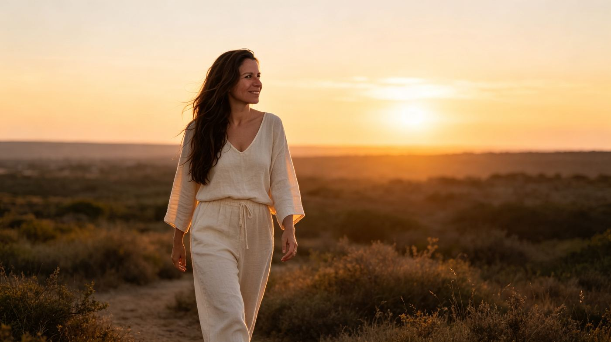
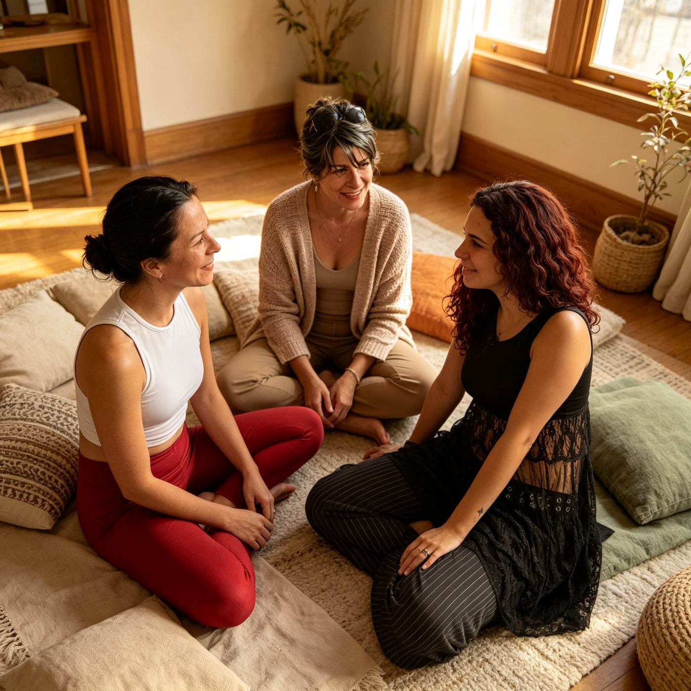

Un espacio para mujeres que se sienten solas, desconectadas, sin energías o sin rumbo, y quieren volver a encontrarse.

Quizás no estás mal.
Quizás estás desconectada.
No estás sola.
Es momento de hacer una pausa.
El piloto automático nos permite seguir funcionando. El problema aparece cuando nos quedamos ahí demasiado tiempo.
AMAY propone una pausa. Un espacio para detenerte, escucharte y volver a elegir desde un lugar más propio.
Una misma dirección: volver a vos.
Explorar mis necesidades, deseos, fortalezas y aquello que fui dejando de lado.
Tomar decisiones, recuperar proyectos y abrir nuevas posibilidades.
Detenerme, respirar, escucharme y reconocer qué me está pasando.
Encuentros, herramientas y espacios para volver a vos.

Espacios de encuentro, escucha y conexión. Compartir, sentirnos acompañadas y recordar que no estamos solas.

Experiencias para explorar aquello que nos pasa desde el cuerpo, la reflexión y la práctica.
Acompañamiento personalizado para quienes quieren profundizar en su proceso y encontrar nuevas posibilidades.

Sentís que estás viviendo en piloto automático.
Te sentís desconectada de vos misma.
Estás atravesando una etapa de cambios.
Querés recuperar proyectos o deseos que dejaste de lado.
Necesitás un espacio donde poder hablar y ser escuchada.
Querés conocer otras mujeres que estén atravesando procesos similares.
Sentís que llegó el momento de volver a elegirte.

Creo en la fuerza de los encuentros reales, en las preguntas profundas y en el poder de una pausa.
AMAY nace para acompañar a mujeres. Todas merecemos un espacio para escucharnos, reconectar y construir una vida más propia.
AMAY propone espacios de transformación a través de experiencias, círculos, talleres y coaching, integrando la reflexión, el cuerpo, la emoción y la acción.
"Llegué pensando que necesitaba unas vacaciones. Me fui entendiendo que lo que necesitaba era parar de verdad, aunque fuera un rato a la semana."
"En el círculo encontré algo que no sabía que estaba buscando: mujeres que entendían exactamente lo que me pasaba, sin tener que explicarlo mucho."
"Empecé el proceso de coaching sin saber bien qué esperar. Hoy tomo decisiones que hace un año ni me animaba a pensar."
De parar. De anclarte. De escucharte.
De volver a elegirte.